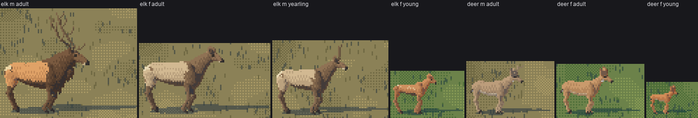

2. Building a cervid that isn't a horse
Back to the tutorial. Code: rig.py in ~/work/pixelart-studies/elements/deer-elk/src/.
The game's old animals were capsules: an elk was a body 1.85 long on legs 0.88, a neck 0.55, a ball of a head. Those are a horse's proportions, and no amount of painting fixes them. This page is the rig I built instead. It's a 3-D rig so it sweeps every facing, gait and size for free, but every number in it came off the board, not from a textbook.

fig. The rig in side view, in units of shoulder height H: torso stations (red: the back line; blue: the belly line), the near-side tubes' centrelines, and the thick parts' outlines. Cow, bull, doe.
Tubes, not capsules
Everything is a Tube: a centreline of stations, each with an elliptical section (a along the tube's "up" normal, b across), a material function for the hide, and a thin flag for the parts that get redrawn as 1-px lines at small sizes (lower legs, ears, antlers, tail). Work in shoulder heights (H = 1) with the withers near x = 0.23, and scale to metres at the end, so the same numbers make a 1.45 m elk and a 0.92 m deer.
The torso: loft it from stations read off photos
This is the part that stops it being a horse. Thirteen stations, each (x, back height, belly height, half-width), smoothed with PCHIP:
ELK_TORSO = [
# x ztop zbot hw (Roosevelt cow side views; the croup slopes to the tail root and
# the buttock rounds down into the hams)
(0.475, 0.74, 0.60, 0.05), # brisket, forward of the forelegs
(0.43, 0.88, 0.54, 0.12),
(0.34, 0.985, 0.52, 0.16), # chest, deep
(0.23, 1.00, 0.50, 0.18), # withers over the girth
(0.09, 0.985, 0.51, 0.20),
(-0.06, 0.965, 0.53, 0.21), # barrel
(-0.22, 0.955, 0.575, 0.20),
(-0.33, 0.955, 0.62, 0.18), # flank tuck
(-0.42, 0.95, 0.60, 0.175), # hip; the ham drops behind the tuck
(-0.50, 0.925, 0.61, 0.155),
(-0.56, 0.885, 0.64, 0.12),
(-0.60, 0.83, 0.68, 0.07), # buttock
(-0.615, 0.78, 0.71, 0.03),
]
What to read in those numbers, and to check on your own photos:
- Length. Brisket to buttock is 1.09 H for the elk and 1.03 H for the deer. My first stations, from memory, were 1.4 H. This is the single biggest horse-maker.
- The back line is level, with the withers a touch above the croup for the elk, level with it for the deer.
- The chest is deep, down to 0.50 H just behind the forelegs, and it pushes forward of them as the brisket.
- The belly rises into the flank tuck (0.62 H), and the ham drops behind it again (0.60). That little reversal is what makes the hindquarters read as a leg joining a body, not the end of a sausage.
- The rear end rounds down: the croup slopes to the tail root and the buttock is a curve, not a cap.
The neck: a wedge
# the neck is a wedge: very deep where it leaves withers and brisket, tapering fast, then
# nearly parallel up to the throat latch
npts = np.array([nb - ndir * 0.12, nb, nb + ndir * sp.neck_len * 0.28, mid, poll])
na = np.array([r0a * 1.05, r0a, r0a * 0.62 + r1a * 0.38, r0a * 0.38 + r1a * 0.62, r1a])
The base starts 0.12 H inside the chest, so the neck's top line runs straight off the withers with no notch and its bottom line off the brisket. For a cow it's 0.26 H deep at the base and 0.09 H at the throat; a bull in September is 0.33 and 0.15, plus a separate mane tube hanging under it. A thin neck rising steeply from the front of the box was the first thing both critics called a horse's.
Legs by anatomy
Each leg is IK from a root (elbow or stifle) to a hoof target, then dressed as separate segments:
if fore:
top = P[0] + np.array([-0.01, 0, 0.10]) # forearm: deep fore-and-aft at the top (muscle)
ra1 = np.array([r[0] * 1.35, r[0] * 1.15, r[0] * 0.9, r[1] * 1.05, r[1]])
else:
# the ham: from under the croup, its rear edge continuous with the buttock
top = P[0] + np.array([-0.11, 0, 0.06])
ra1 = np.array([r[0] * 1.55, r[0] * 1.4, r[0] * 1.0, r[1] * 1.2, r[1]])
out.append(tube_from_points(name + "1", seg1, ra1, ra1 * 0.62, ...)) # a blade from the side, slim from the front
# hock point: the calcaneus sticks out behind the hock
hp = P[1] + back * r[1] * 1.0 + np.array([0, 0, r[1] * 0.4])
# knee (carpus) knob on the foreleg, a slim flat-sided cannon, a fetlock knob, a pastern,
# and a small dark wedge of a hoof, toe forward, flat sole
- Thin. Cannon radius 0.019 H for the elk, 0.016 for the deer. At 60 px that's a 1-px line, as it should be.
- The hind leg bends. The gaskin (0.38 H) is longer than the space between stifle and hock allows straight, so the hock always sits behind the line, and its point sticks out behind. The studio critic's round 3: "the hind leg's hock is the most readable joint on a deer; give it its angle."
- Forelegs bend forward at the carpus, hind legs back at the hock: that's
bend_forward=forein the IK solve.
Antlers: angle the tines from the beam
I got this wrong twice, and both critics' first note was about it. A bull elk's beam leaves the skull going up, out and back, sweeping over the shoulders; the tines come off the front of the beam. If you set each tine's angle from the head, the tines come out like a comb on a vertical beam, or a pitchfork held up. Set it from the beam's own direction where the tine leaves:
for k, (u, L, ang) in enumerate([(0.05, 0.30, 95), (0.15, 0.26, 80), (0.40, 0.36, 62), (0.62, 0.28, 55), (0.80, 0.20, 48)]):
p0 = point on the beam at fraction u
T = the beam's direction there
F = hd - (hd @ T) * T; F /= norm(F) # "forward", made perpendicular to the beam
a = np.radians(ang + rng.normal(0, 6))
d = T * np.cos(a) + F * np.sin(a) + out_v * 0.12
d2 = T * np.cos(a * 0.6) + F * np.sin(a * 0.6) # the tip curls back toward the beam
tp = [p0, p0 + d * L * 0.55, p0 + d * L * 0.55 + d2 * L * 0.45]
Brow tine at 95°, nearly straight forward over the face; the longest (the trez) at 40% up; the crown near the top at 48°. The antlers are fixed to the skull (hd, hup are the head's axes), so they lay back automatically when the bull lifts his nose to bugle. A blacktail buck carries a small dichotomous fork on the same principle.


nb025, fig. The pitchfork, then the final.
Who: species, sex, age, season, seed
Individual(species, sex, age, season, seed).spec() edits the species' numbers:
if self.sex == "m" and self.age == "adult" and self.species == "elk":
# bulls: bigger front end, heavier neck, the mane
sp = replace(sp, neck_r0=(0.33, 0.17), neck_r1=(0.15, 0.10), mane=0.13, head_len=0.38, ...,
torso=[(x, zt + (0.02 if x > 0 else 0), zb - 0.05 * max(0, 1 - abs(x - 0.15) / 0.55), hw * 1.08) ...])
if self.age == "young":
# calves and fawns: legs long for the body, big head and ears, short neck
... torso squashed toward 0.62 H, legs x1.06, head x0.82, ears x1.05, H x0.62
# individual variation, a few percent: H, neck length, head length
Antler state comes from the season (the naturalist's calendar): none in spring, velvet in summer, hard in autumn and winter, a spike on a yearling.

fig. Everyone at true relative scale (one px/m for the whole row): elk bull, cow, yearling, calf; blacktail buck, doe, fawn.
The seven errors, in the order the board found them
| # | what I had | what the photo shows | where it's fixed |
|---|---|---|---|
| 1 | torso 1.4 H long | 1.05–1.3 H | the stations |
| 2 | a tube of a neck on the front of a box | a wedge from withers and brisket | npts, na |
| 3 | a box end | a sloping croup, a rounded buttock into the hams | last four stations, the ham tube |
| 4 | legs 2 px at 60 px | cannon ≈ 0.035 H: 1 px | fore_r, hind_r |
| 5 | a straight hind leg | the hock behind the line, its point out | hind_len, the hk tube |
| 6 | antlers vertical, then tines forward from the head | beam back, tines angled off the beam | antlers() |
| 7 | a tail pointing forward into the rump | it hangs behind | a sign in tdir (found in the last hour, from behind) |
Two more that came later, from the colour renders: the head carriage (see gaits) and a front view with no face: an elk's face must be a shade lighter than its neck, or seen from the front the head vanishes into the dark chest (the FACE material, the hide).
Where it stops
The bull's neck and mane are still thinner than a September Roosevelt bull's; I deepened them in the last change and they're closer, not there. The deer's ears smear into its antler base at 60 px. And the rig has no muscle: the shoulder is one extra ellipsoid, the ribs and ham are the torso's own curve. The weight in the photos is in those masses, which is the next thing I'd model.